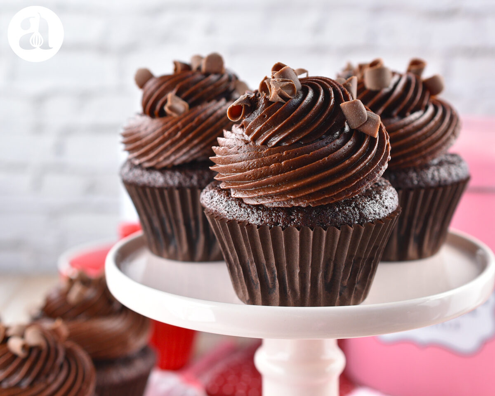

Cupcakes de Chocolate
Ingredientes:
- 3 huevos.
- 2 taza de harina leudante.
- 1 taza de cacao.
- 1 taza de azúcar.
- 1 taza de agua.
- 1/2 taza de aceite.

Preparación:
- Encender el horno, a fuego medio.
- Batir los huevos con el cacao, el azúcar, el agua y aceite.
- Una vez incorporados los ingredientes, agregar la harina tamizándola y revolver de forma envolvente.
- Colocar la preparación completando 3/4 del molde de papel para cupcakes.
- Llevar a horno 20/30 minutos. Sabrás si están listos al introducir un cuchillo y este salga limpio.
- Dejar enfriar y decorar con una manga con mouse de chocolate o dulce de leche.
- Servir como postre o merienda. ¡A disfrutar!